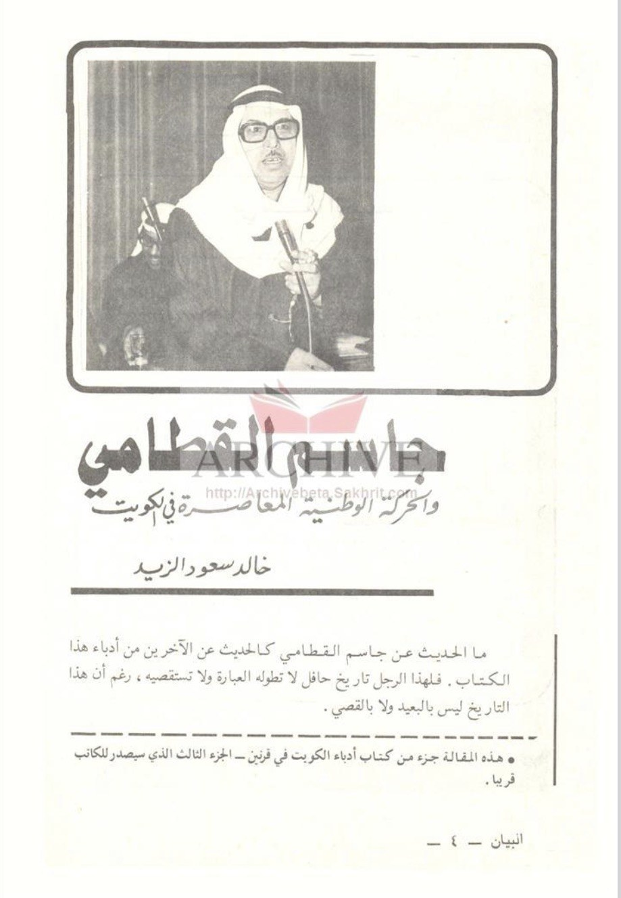
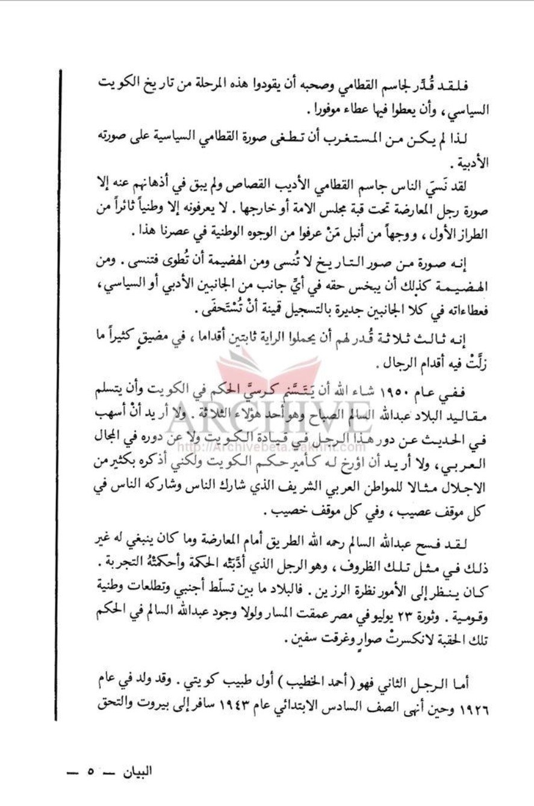
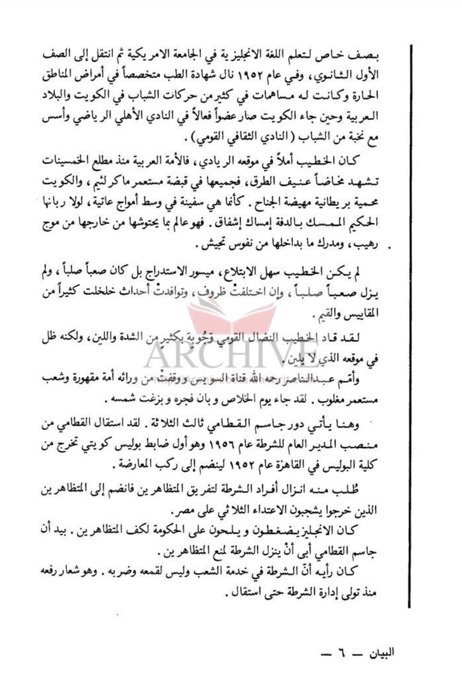
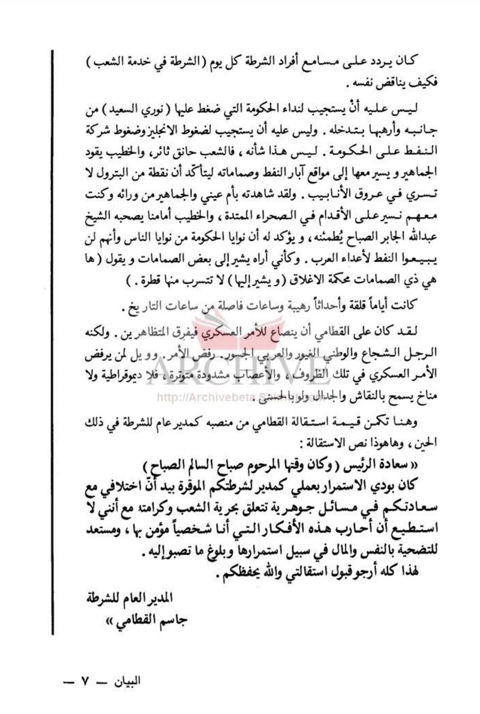
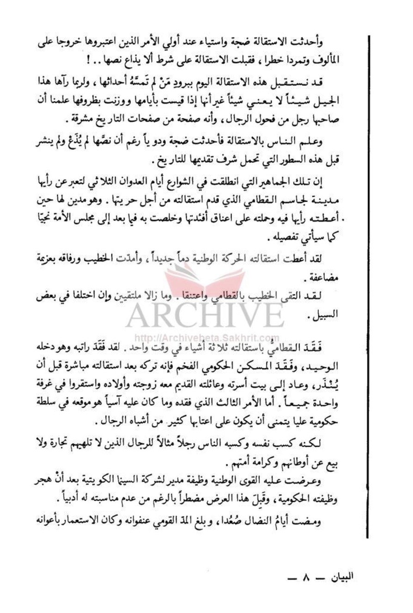
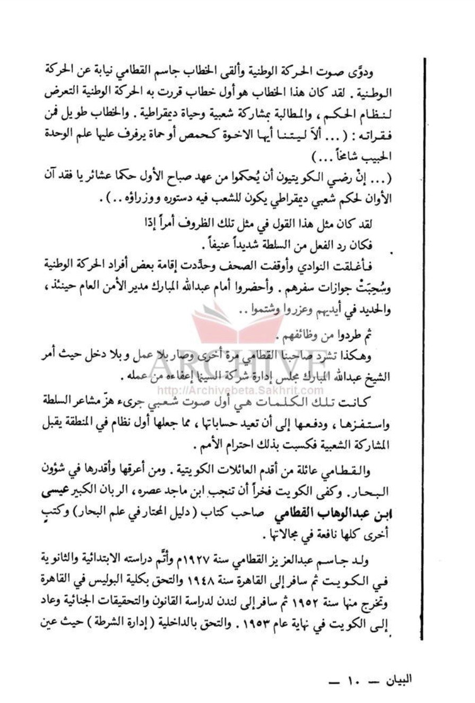

1 November 1981 · Magazine article, Al-Bayan, issue 188, pages 4 to 11, from the third volume of Udaba Al-Kuwait fi Qarnayn
«Jassim Al-Qatami and the Contemporary National Movement in Kuwait», by Khalid Saud Al-Zaid
What it is
A profile of Jassim Abdulaziz Al-Qatami. It gives his schooling in Kuwait, the Cairo police college from 1948, and his appointment as Director General of Police at the end of 1953, the first Kuwaiti officer to graduate. In 1956 he refused to send the police against the crowds supporting Egypt and resigned, and the article prints his resignation letter in full. It records his 1 February 1959 speech at Shuwaikh Secondary on behalf of the national movement, and names the Al-Qatami as one of the oldest Kuwaiti families and among the most expert in the sea, with Captain Eissa bin Abdulwahab Al-Qatami and his Dalil Al-Muhtar. It remembers Jassim as an early scout, sportsman and short story writer.
Why it matters
A full contemporary portrait of Jassim, with the text of his 1956 resignation.
Page copies







Others named
Sources
Khalid Saud Al-Zaid, «Jassim Al-Qatami wal-Haraka Al-Wataniya Al-Mu'asira fil-Kuwait», Al-Bayan (Kuwait), issue 188, 1 November 1981, pages 4 to 11
How this text was made: Page 9 does not name the family, so it is not shown.
Open in the interactive site